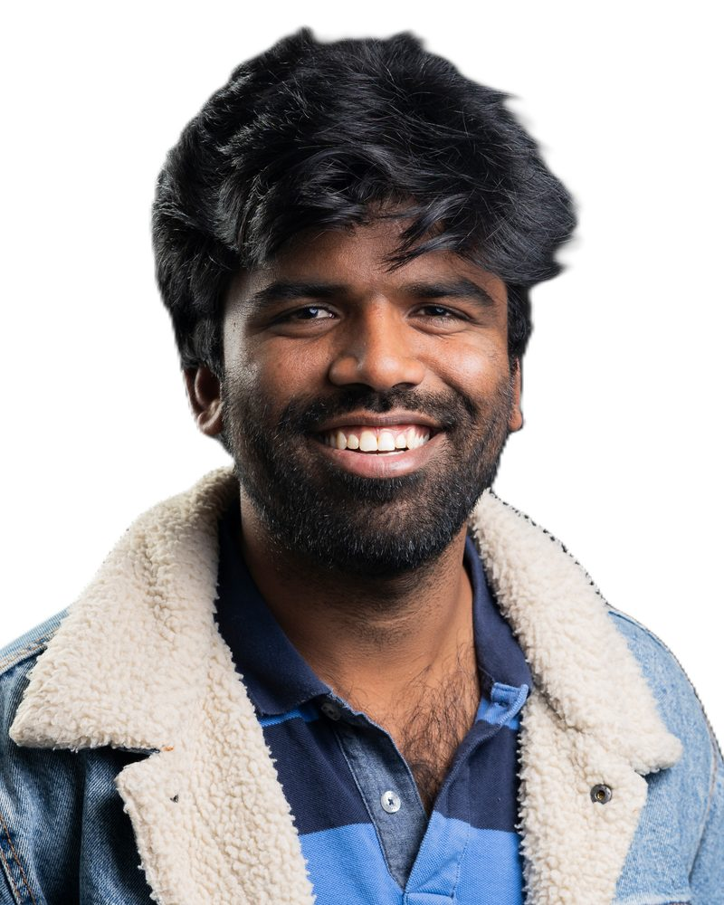

Scale what you've built
- Collaborative R&D projects
- Cascade funding open calls
- Innovation acceleration support
- First industrial deployment
Horizon Europe, the EIC and cascade calls suit fast-growing SMEs taking new solutions to market.
EU Funding & Innovation · Project Manager · Cologne–Bonn
Whether you're a company, a research organisation or a public authority, I help you find, win and run the EU funding that moves your innovation, sustainability and industrial plans forward.

EU funding
The EU invests heavily in innovation, competitiveness and sustainability through its funding programmes. Horizon Europe, the Innovation Fund, LIFE and the Connecting Europe Facility (CEF) back everything from research and industrial change to major infrastructure across Member States.
Each programme serves clear policy goals. Knowing how the calls are built and what the Commission wants to achieve is what turns one-off grant applications into a coherent innovation and investment strategy.
What the EU is funding
The EU's main research and innovation programme for 2021–2027, with an indicative budget of €93.5 billion.
Official page ↗ Low-carbon technologiesFunds innovative low-carbon technologies that help Europe reach climate neutrality.
Official page ↗ Environment & climateThe EU's funding instrument for the environment and climate action, running since 1992.
Official page ↗ InfrastructureSupports transport, energy and digital networks that connect Europe.
Official page ↗Who it's for
Horizon Europe, the EIC and cascade calls suit fast-growing SMEs taking new solutions to market.
Major investments that need a close fit with EU industrial and climate policy.
Research organisations sit at the heart of Horizon Europe consortia.
Long-term territorial development in line with EU goals.
How I help
Winning EU funding takes more than a well-written proposal. You need to spot the right calls early, follow a clear funding strategy, build a project that stands out and, once funded, deliver it without surprises. I support you at every one of those stages.
Finding the right programme
Choosing the right instrument comes down to six questions. A mismatch between project and programme is one of the most common reasons good applications fail.
Technology readiness level (TRL)
Budget and financing volume
Consortium or single applicant
Own contribution and cash flow
Strategic and policy alignment
Timeline and regulatory context
Starting from your long-term goal, not the call. I shape the concept, build the consortium and write proposals evaluators can score with confidence. I specialise in Horizon Europe and the LIFE Programme.
Grant Agreement preparation and amendments, work-package leadership, budget, risk and partner management, deliverables and periodic reporting to the European Commission. PRINCE2 certified.
Turning project results into business models and exploitation routes that last beyond the grant, backed by market research and techno-economic assessment.
Engaging industry, public bodies, communities and regulators to drive uptake and replication, and keeping impact claims aligned with EU policy priorities.
Growing with AI I use AI tools for faster call scouting, programme analysis and proposal drafting, and I'm extending my reach beyond Horizon Europe and LIFE to the wider EU funding landscape, including the EIC, Digital Europe, Interreg and cascade funding.
About
I'm an energy engineer and project manager with more than nine years across research, innovation and the energy sector, including five years delivering EU-funded projects end to end.
I've contributed to numerous successful Horizon Europe and LIFE proposals and currently manage multiple multinational R&I projects at R2M Solution. My specialism is clean energy: energy communities, demand-side flexibility and the EU policy that shapes them.
Let's connect
I'm glad to talk with companies, research organisations, public bodies and innovators in any sector who want to secure EU funding or deliver a funded project well. Reach out about a call, a consortium or an early idea.
fzahmed01@gmail.com